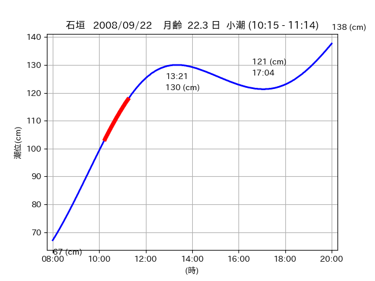
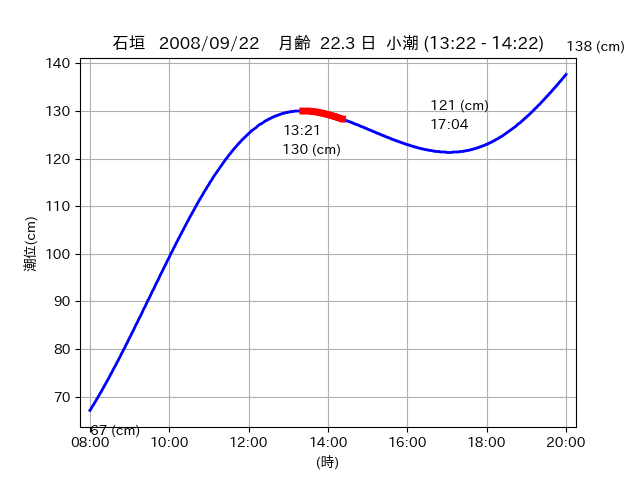

<!DOCTYPE html>
<html>
<head>
    
    <meta http-equiv="content-type" content="text/html; charset=UTF-8" />
    
        <script>
            L_NO_TOUCH = false;
            L_DISABLE_3D = false;
        </script>
    
    <style>html, body {width: 100%;height: 100%;margin: 0;padding: 0;}</style>
    <style>#map {position:absolute;top:0;bottom:0;right:0;left:0;}</style>
    <script src="https://cdn.jsdelivr.net/npm/leaflet@1.9.3/dist/leaflet.js"></script>
    <script src="https://code.jquery.com/jquery-3.7.1.min.js"></script>
    <script src="https://cdn.jsdelivr.net/npm/bootstrap@5.2.2/dist/js/bootstrap.bundle.min.js"></script>
    <script src="https://cdnjs.cloudflare.com/ajax/libs/Leaflet.awesome-markers/2.0.2/leaflet.awesome-markers.js"></script>
    <link rel="stylesheet" href="https://cdn.jsdelivr.net/npm/leaflet@1.9.3/dist/leaflet.css"/>
    <link rel="stylesheet" href="https://cdn.jsdelivr.net/npm/bootstrap@5.2.2/dist/css/bootstrap.min.css"/>
    <link rel="stylesheet" href="https://netdna.bootstrapcdn.com/bootstrap/3.0.0/css/bootstrap-glyphicons.css"/>
    <link rel="stylesheet" href="https://cdn.jsdelivr.net/npm/@fortawesome/fontawesome-free@6.2.0/css/all.min.css"/>
    <link rel="stylesheet" href="https://cdnjs.cloudflare.com/ajax/libs/Leaflet.awesome-markers/2.0.2/leaflet.awesome-markers.css"/>
    <link rel="stylesheet" href="https://cdn.jsdelivr.net/gh/python-visualization/folium/folium/templates/leaflet.awesome.rotate.min.css"/>
    
            <meta name="viewport" content="width=device-width,
                initial-scale=1.0, maximum-scale=1.0, user-scalable=no" />
            <style>
                #map_a5571af4ca1bb7707a8a72298ac458f2 {
                    position: relative;
                    width: 2048.0px;
                    height: 1600.0px;
                    left: 0.0%;
                    top: 0.0%;
                }
                .leaflet-container { font-size: 1rem; }
            </style>
        
</head>
<body>
    
    
            <div class="folium-map" id="map_a5571af4ca1bb7707a8a72298ac458f2" ></div>
        
</body>
<script>
    
    
            var map_a5571af4ca1bb7707a8a72298ac458f2 = L.map(
                "map_a5571af4ca1bb7707a8a72298ac458f2",
                {
                    center: [24.262, 124.09],
                    crs: L.CRS.EPSG3857,
                    ...{
  "zoom": 12,
  "zoomControl": true,
  "preferCanvas": false,
}

                }
            );

            

        
    
            var tile_layer_cf985b8e73bbc86e1fc2eadd7a73d7cd = L.tileLayer(
                "https://cyberjapandata.gsi.go.jp/xyz/seamlessphoto/{z}/{x}/{y}.jpg",
                {
  "minZoom": 0,
  "maxZoom": 18,
  "maxNativeZoom": 18,
  "noWrap": false,
  "attribution": "\u5730\u7406\u9662\u5730\u56f3",
  "subdomains": "abc",
  "detectRetina": false,
  "tms": false,
  "opacity": 1,
}

            );
        
    
            tile_layer_cf985b8e73bbc86e1fc2eadd7a73d7cd.addTo(map_a5571af4ca1bb7707a8a72298ac458f2);
        
    
            var marker_a39d1932c691c91d9038b8cba35322ab = L.marker(
                [24.2352, 123.9895],
                {
}
            ).addTo(map_a5571af4ca1bb7707a8a72298ac458f2);
        
    
            var icon_ac52c3e04ce8f9596d240c718dcec3ab = L.AwesomeMarkers.icon(
                {
  "markerColor": "blue",
  "iconColor": "white",
  "icon": "info-sign",
  "prefix": "glyphicon",
  "extraClasses": "fa-rotate-0",
}
            );
        
    
        var popup_9669cba8dfb880b05f056eee8ebaee5d = L.popup({
  "maxWidth": "100%",
});

        
            
                var html_467dcd48d9b2ceeb3126dd76e4b62e4c = $(`<div id="html_467dcd48d9b2ceeb3126dd76e4b62e4c" style="width: 100.0%; height: 100.0%;"><table><tr><td></td></tr><tr><td><center>20080922 No.1 </center></table></td></tr></table</div>`)[0];
                popup_9669cba8dfb880b05f056eee8ebaee5d.setContent(html_467dcd48d9b2ceeb3126dd76e4b62e4c);
            
        

        marker_a39d1932c691c91d9038b8cba35322ab.bindPopup(popup_9669cba8dfb880b05f056eee8ebaee5d)
        ;

        
    
    
                marker_a39d1932c691c91d9038b8cba35322ab.setIcon(icon_ac52c3e04ce8f9596d240c718dcec3ab);
            
    
            var marker_f0504eb04f73f9762a0987651bc91be1 = L.marker(
                [24.2625, 124.0901],
                {
}
            ).addTo(map_a5571af4ca1bb7707a8a72298ac458f2);
        
    
            var icon_ab28f9ea7990e903558bcef7527a6eef = L.AwesomeMarkers.icon(
                {
  "markerColor": "blue",
  "iconColor": "white",
  "icon": "info-sign",
  "prefix": "glyphicon",
  "extraClasses": "fa-rotate-0",
}
            );
        
    
        var popup_5ec5a3e2cf8ff58efa655aacfbd9637b = L.popup({
  "maxWidth": "100%",
});

        
            
                var html_2c22f042538c3fc8975b690140853b95 = $(`<div id="html_2c22f042538c3fc8975b690140853b95" style="width: 100.0%; height: 100.0%;"><table><tr><td></td></tr><tr><td><center>20080922 No.2 </center></table></td></tr></table</div>`)[0];
                popup_5ec5a3e2cf8ff58efa655aacfbd9637b.setContent(html_2c22f042538c3fc8975b690140853b95);
            
        

        marker_f0504eb04f73f9762a0987651bc91be1.bindPopup(popup_5ec5a3e2cf8ff58efa655aacfbd9637b)
        ;

        
    
    
                marker_f0504eb04f73f9762a0987651bc91be1.setIcon(icon_ab28f9ea7990e903558bcef7527a6eef);
            
</script>
</html>